更多美食
更多精彩


玉米排骨汤
收藏- 美容
- 消除水肿
- 营养
- 消除水肿
- 消除水肿
- 工艺炖
- 难度 简单
- 人数 2人份
- 口味家常
- 准备时间 20分钟
- 烹饪时间 30分钟
健康营养玉米排骨汤是一道比较 家常的菜，简单易做，健康营养西红柿鸡蛋汤是一道比较家常的菜，简单易做， 健康营养西红柿鸡蛋汤是一道比较家常的菜，简单易做， 健康营养西红柿鸡蛋汤是一道比较家常的菜， 常的菜，简单易做，健康营养西红柿鸡蛋汤是一道比较家常的菜，简单易做， 健康营养西红柿鸡蛋汤是一道比较家常的菜，简单易做， 健康营养西红柿鸡蛋汤是一道比较家常的菜，
用料
- 主料
- 玉米2个
- 排骨一斤
- 辅料
- 清水1个
- 大蒜2个
- 葱花1个
- 盐2个
- 味精1个
- 食用油2个
注意事项
- look1
- look2
- look3
- look4
玉米排骨这道菜清爽不油腻，排骨要冲洗干净， 最好是用沸水煮过一遍，这样会去除排骨的腥味， 玉米要选用新鲜的，嫩的，这样汤汁才会有玉米的香味，炖汤过程中 做好是一次把水加好，不要中途又去加水 玉米排骨这道菜清爽不油腻，排骨要冲洗干净， 最好是用沸水煮过一遍，这样会去除排骨的腥味， 玉米要选用新鲜的
玉米排骨这道菜清爽不油腻，排骨要冲洗干净， 最好是用沸水煮过一遍，这样会去除排骨的腥味， 玉米要选用新鲜的，嫩的，这样汤汁才会有玉米的香味，炖汤过程中 做好是一次把水加好，不要中途又去加水 玉米排骨这道菜清爽不油腻，排骨要冲洗干净， 最好是用沸水煮过一遍，这样会去除排骨的腥味， 玉米要选用新鲜的
玉米排骨这道菜清爽不油腻，排骨要冲洗干净， 最好是用沸水煮过一遍，这样会去除排骨的腥味， 玉米要选用新鲜的，嫩的，这样汤汁才会有玉米的香味，炖汤过程中 做好是一次把水加好，不要中途又去加水 玉米排骨这道菜清爽不油腻，排骨要冲洗干净， 最好是用沸水煮过一遍，这样会去除排骨的腥味， 玉米要选用新鲜的
玉米排骨这道菜清爽不油腻，排骨要冲洗干净， 最好是用沸水煮过一遍，这样会去除排骨的腥味， 玉米要选用新鲜的，嫩的，这样汤汁才会有玉米的香味，炖汤过程中 做好是一次把水加好，不要中途又去加水 玉米排骨这道菜清爽不油腻，排骨要冲洗干净， 最好是用沸水煮过一遍，这样会去除排骨的腥味， 玉米要选用新鲜的
操作步骤(玉米排骨汤)
-
步骤1
1：玉米剥掉外壳
2：去掉外面的玉米须
3：清水洗干净
4：用刀切成一小块
5：放入清水了，大火煮沸
-
步骤2
1：玉米剥掉外壳
2：去掉外面的玉米须
3：清水洗干净
4：用刀切成一小块
5：放入清水了，大火煮沸
-
步骤3
1：玉米剥掉外壳
2：去掉外面的玉米须
3：清水洗干净
4：用刀切成一小块
5：放入清水了，大火煮沸
-
步骤4
1：玉米剥掉外壳
2：去掉外面的玉米须
3：清水洗干净
4：用刀切成一小块
5：放入清水了，大火煮沸
相关推荐
 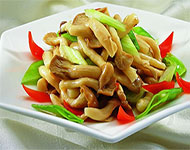
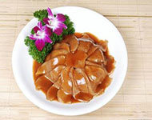
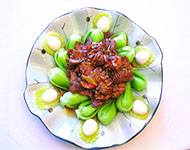
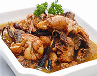
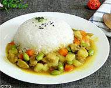
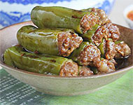
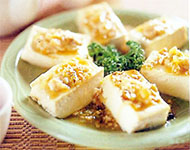
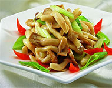
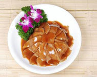
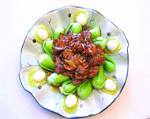
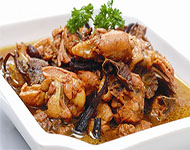
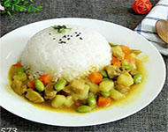
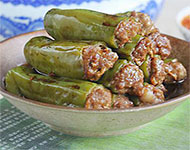
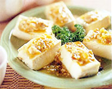
人气美食推荐

天津狗不理包子，肉馅特别多，包子皮特特别软，里面还有很多汤汁 ，吃上一口，香软可口，特别好吃，吃了一口还想再吃一口
- 豆芽黄瓜汤口味：清淡
- 西红柿鸡蛋汤口味：清淡
- 糖醋排骨口味：清淡
- 红烧小龙虾口味：清淡
- 韩国炒年糕口味：清淡
- 辣椒炒肉口味：清淡
- 四川担担面口味：清淡
- 拔丝香蕉口味：清淡
-
微博关注我们
-
 微博关注我们
微博关注我们
-
 微博关注我们
微博关注我们